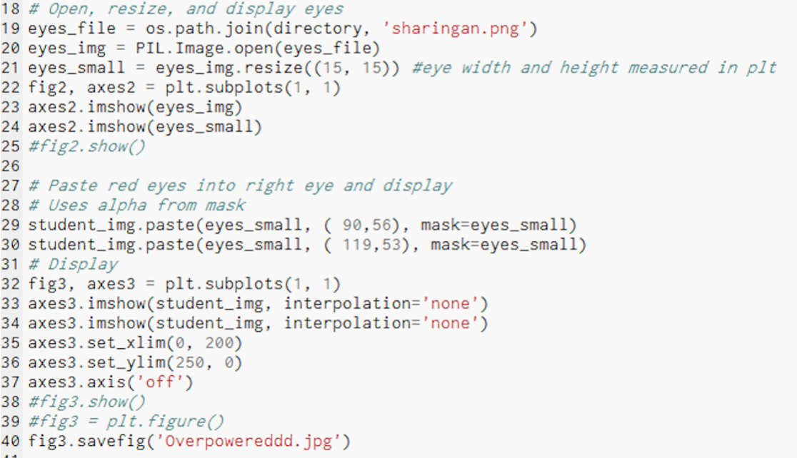
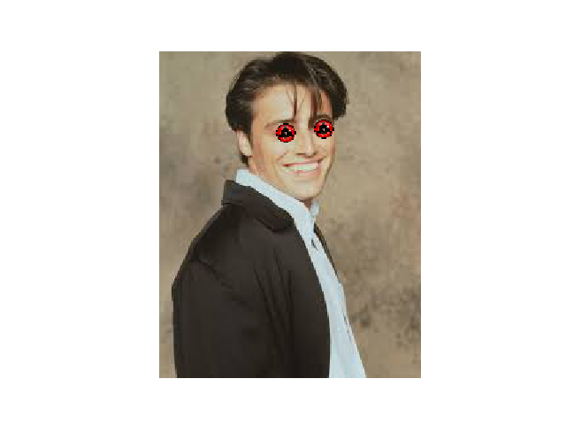
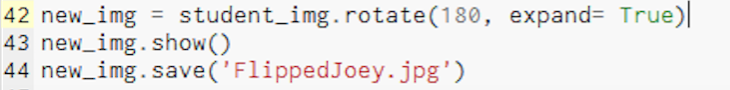

This game my partner and I created is called Jungle Survivor 5000. At the beginning of the whole project, we were given the opportunity on creating either a story, or a game. We decided to go with the game since our objective was to make something that would be entertaining and interactable. The game is a survival game. You have the option to choose between a female and a male. After you choose a character, the game will start. The instructions of the game are to dodge the crossbows being shot at you for a certain amount of time. Then a medal will appear across the map, and you have to touch it in order to advance to the next level. There are a total of three levels for each character, and each level the crossbows will come at the character faster. If you survive all three levels and touch the medals that will spawn at the end of each level, you win. If you continiously keep getting hit by the crossbows, your health will keep dropping, and if it gets to zero, you will lose the game. The game contained a series of functions which allowed the character to move using the arrows. The crossbow contains an algorithm which makes the function repeat, which means that the4 crossbows will continually be coming untill you touch the metal.

The App that my partner and I decided to create was a Calorie Count App. The purpose of this app as to ultimately give the user a choice of either lose weight, or gain weight. The App provides backgroud information on both cases and also includes foods and drinks for the most part. During the process of the user looking at the recommendations, they have the opportunity to press a button that says "more info" and it will take them to the full procedure on how to make that certain consumable. The user also is granted the ability to calculate the amount of calories they are consuming each day. This function is an algorithm as it uses mathematical functions to add up as the user inputs digits. Overall, the app is composed of simple functions to get the user from one page to another without complications.
For Version 1, We introduced the the image that will be manipulated. In this case it is Joey from Friends. The image is loaded from the file and when you run it, it shows the image.
Version 2:
 For Version 2, we are taking the Original pic of Joey and applying "sharingan" eyes to him. We do so by inputting the eye image into the code and then placing them over his original eyes using coordinates. The edited picture is then saved as a new file.
Version 3:
 For Version 3, We took the edited image of Joey and we flipped 180 degrees/ upside down. The image was then saved again.Overall, the idea of using coding in order to manipulate an image opens up different coding requirements due to the difference in purpose that the coder is trying to achieve. Through this, I have learned that through image manipulation, there is much more that goes on when you edit an image by changing its size,
The Malware presentation was assigned to further comprehend the different types of computer bugs that currently exist today and how to deal with them. In this case, Austin and I decided to further research "The Ping of Death" or DDOS. Ping of death is the act of flooding a website server or a users router, causing it to slow down or even shut off; however, this is mostly used when it comes to video games. Hackers are able to obtain a persons IP address and floods the router, causing the user to go offline. Nowadays, there are ways to prevent these attacks by having an IP scrambler, which makes it harder to obtain ones IP address, a router that is well protected by these attcks, or by having a better firewall installed to the system which can detect these attacks and ultimatelystop them. Through this project, i was able to better comprehend how this bug works, its origin, why its used and ways to prevent the attacks.
Introducing the idea of big data on certain concepts can be narrowed down to finding specific desired data. Dindi and i collaborated to research the mean salary of full-time workers at this current point of time. Through this, we were able to find not only the mean salary, but also the amount of workers per race. We then took that data and composed various pie charts for each race to see the percentage of workers based on age groups. Along with this, we made a histogran to represent the number of workers per race, to represent which race has the most full time workers. Through this project, I was able to learn that big data provides a large amount of specific recordings when it comes to just a general topic.